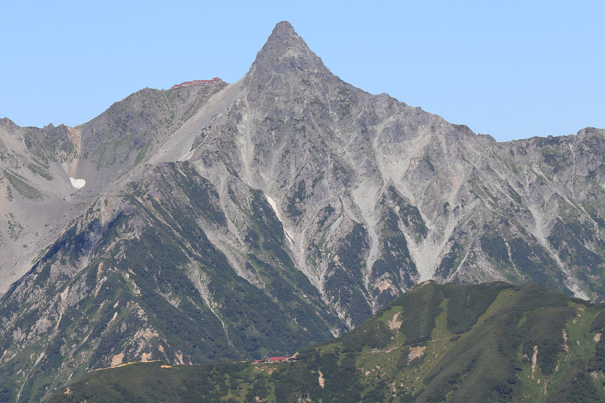
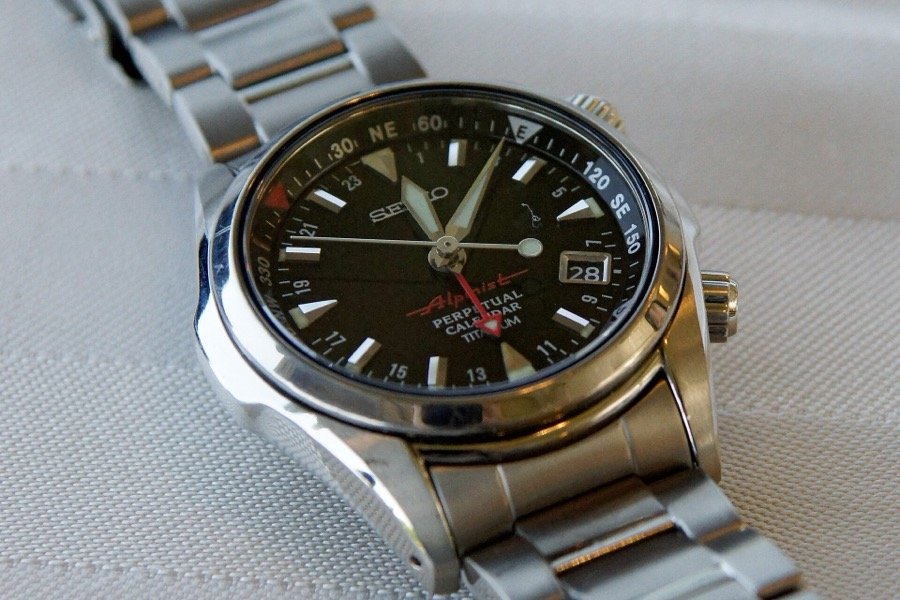

セイコー アルピニスト · 1959 — 2026
Built for the Mountains山の時計
Seiko’s first sports watch, made in 1959 for Japan’s mountain climbers, and every Alpinist since. Reference by reference.

A watch for a mountainous country
Seiko’s first sports watch was made for the people who walked into Japan’s mountains.
Seiko’s own account is short and specific. In 1959 it introduced the Laurel Alpinist as its first sports watch, for mountaineers and outdoor enthusiasts as climbing and trekking grew in popularity. Seiko lists the features: a screw-back case to keep out dust and sand, a leather pad between watch and wrist, and luminous hands and indices. Above all, the large mountain-peak markers at 3, 6, 9 and 12 stood for the four compass points.
Seiko later called that outdoor focus the starting point for its sports watches, a line that led to Japan’s first diver’s watch in 1965. The Alpinist name itself went quiet in the mid-1960s and returned in 1995. The timeline picks up the story from there.
Seiko-documented from Seiko’s own pages Japanese context broader history, not claimed by Seiko
- —Japanese contextAbout 70% of Japan's land area is mountainous, according to the Geospatial Information Authority of Japan (GSI, MLIT). The often-quoted 73% figure is a secondary-source number.source ↗
- MeijiJapanese contextThe term 'Japanese Alps' was first used by William Gowland, an English metallurgist at the Osaka Mint (in Japan 1872-1888). Writing in A Handbook for Travellers in Central & Northern Japan (ed. Ernest Satow), he said the Hida range 'might perhaps be termed the Japanese Alps'. Walter Weston, an English missionary in Japan at intervals between 1888 and 1915, popularised the name with Mountaineering and Exploration in the Japanese Alps (1896) and is remembered as the 'father of the Japanese Alps'.source ↗
- 1905Japanese contextThe Japanese Alpine Club (Nihon Sangakukai) was founded in 1905 (Meiji 38) by Kojima Usui and others, inspired by Weston and the (British) Alpine Club; it was Japan's first mountaineering organisation. Its journal Sangaku began in 1906.source ↗
- 1956Japanese contextManaslu (8,163 m) was first climbed on 9 May 1956 by Toshio Imanishi and Gyalzen Norbu on a Japanese expedition led by Yuko (Aritsune) Maki, a landmark of postwar Japanese mountaineering.source ↗
- 1961?Seiko-documentedSeiko's German-language news page on the Prospex Alpinist relaunch says the original model was introduced in 1961 for Japanese mountain explorers and climbers, known in Japanese as 'Yama-otoko' ('mountain men'), rendered in English as 'Alpinist'.source ↗
- 1965Seiko-documentedSeiko's heritage page says its 1965 diver's watch was worn by Japanese Antarctic Research Expedition members (four times since 1966), adventurers crossing the Arctic, and mountaineers summiting Everest. This is the diver's watch, NOT the Alpinist. Seiko also says Naomi Uemura (first Japanese to summit Everest, 1970) wore a 1970 diver's watch on his 1974-76 solo dog-sled journey from Greenland to Alaska.source ↗
- 1981Seiko-documentedThe Seiko Museum opened in 1981 for Seiko's centennial and moved to Ginza in 2020 (as The Seiko Museum Ginza), marking the 160th anniversary of founder Kintaro Hattori's birth; Ginza is where he was born and started his business. The About page does not mention the Alpinist.source ↗
- 2016Japanese contextMountain Day (Yama no Hi) falls on 11 August. It was created by a 2014 amendment to the Act on National Holidays, first observed in 2016, with the legal purpose 'to gain opportunities to become familiar with mountains and to appreciate their blessings'. Mountaineering organisations formed a committee in 2010 to lobby for it.source ↗
The mountains of Japan
The peaks at the heart of Japanese mountaineering. Select a peak or use the list.
Timeline of the Alpinist
16 series, in order. Each card shows a lead reference; every reference has its own page.
Family tree
Solid lines mark direct succession. Dashed lines mark a revival or reinterpretation that returns to an earlier design across a gap in production.
Seiko has never published an official generation count; collectors number the generations differently. This tree groups references by series and calibre.
Models
Filter every documented reference. Select a card to open its page, or add it to the comparison.
Side by side
Choose two to four references. Rows where the values differ are highlighted.
Values differ across the selection
How the design changed
Drag the slider to move through the generations. The drawings are schematic, based on the documented features of each era; they are not photographs.
Movement lineage
From an unnumbered 17-jewel Seikosha hand-wound movement to the three-day 6R55. Scroll sideways along the chain.
Diagram is a stylised illustration, not an engineering drawing of any specific calibre.
How the compass ring works
The Alpinist’s inner ring is not a magnetic compass. It is a rotating direction scale that you align using the sun and the hour hand. Try it: drag the sun, the hour hand or the ring, or use the sliders.
Limitations — read before relying on it
- Seiko describes the method as giving only a rough indication of direction. It is no substitute for a magnetic compass and map.
- It assumes the sun moves 15° an hour and is due south (or north) at 12:00. In reality noon varies with your longitude within the time zone and the time of year, so the result can be well off.
- Near the tropics, and around midday in summer when the sun is high, the method becomes unreliable.
- With daylight-saving time, use 1 o’clock instead of 12 as the reference (tick the box above to see the error).
- In the southern hemisphere the method is reversed: point 12 at the sun, and the bisector gives north.
From the archive
Public-domain and openly licensed historical material, with full source information.
Seiko’s own photographs are linked from Seiko’s website with credit, never copied. Its historical advertising and catalogues are copyrighted and are not reproduced. They can be seen at the Seiko Museum Ginza ↗ and in Seiko’s official Alpinist history pages ↗.
Sources & further reading
Priority went to Seiko’s own pages, archived Seiko catalogue listings and instruction manuals, then the established watch press. Forums were used only to find leads. Where sources disagree, the disagreement is stated on the relevant page.
Seiko official
- Seiko Germany press release 6 Feb 2020
- Seiko France press release 16 Oct 2020
- Seiko Spain Alpinist Limited Edition special page
- Seiko Italy product page SJE085J1
- Seiko global product page
- Seiko global product page
- Seiko global press release 7 Sep 2021
- Seiko global product page
- Seiko US product page
- Seiko global product page
- Seiko global product page
- Seiko global product page
- Seiko global product page
- Seiko global product page
- Seiko US product page
- Seiko US product page
- Seiko US press release 6 Sep 2023
- Seiko Italy press release 2025 (PDF)
- Seiko US product page
- Seiko US product page
- Seiko US product page
- Seiko Japan SBDC211
- Seiko US product page
- Seiko US press release 6 Aug 2026
- Seiko US product page
- Seiko Japan product page
- Seiko US product page
- Seiko Japan product page
- Seiko Japan product page
- Seiko Japan product page
- Seiko US product page
- Seiko global product page
Watch press
- Worn & Wound – [VIDEO] Missed Review: The Seiko Alpinist SARB017
- Worn & Wound – Seiko Says Goodbye to Four Iconic Watches (2018-03-01)
- Gear Patrol – One of Our Favorite Affordable Watches Is Being Discontinued (2018-02-28)
- aBlogtoWatch, 13 Dec 2019
- Hodinkee Japan, 20 Jan 2020
- Fratello
- Fratello
- Time+Tide intro
- aBlogtoWatch review 15 Oct 2021
- Fratello intro
- Monochrome, 15 Dec 2021
- Mr Stateless, 10 Jun 2026
- Notebookcheck
- Monochrome, 9 Sep 2022
- Fratello
- Bangkok Post 'A tribute to the forest' (paywalled, not read)
- Teddy Baldassarre, 12 Feb 2025
- Crown Watch Blog, 18 Dec 2025
Databases & references
Further reading
- Seiko Watches: Our Heritage
- Seiko: re-creation of the 1959 Alpinist (press release)
- Seiko Museum Ginza (About)
- Seiko Museum: using a watch as a compass
- Seiko compass bezel instruction manual
- GSI: Elevations of Japan's main mountains (1003 peaks)
- National Diet Library: New-style mountain climbing (Gowland, Weston)
- Wikipedia: Japanese Alps
- Wikipedia: Walter Weston
- nippon.com: Mountain Day
- Wikipedia: Direction determination